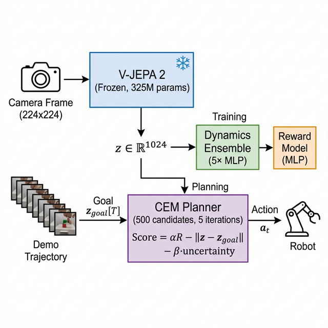
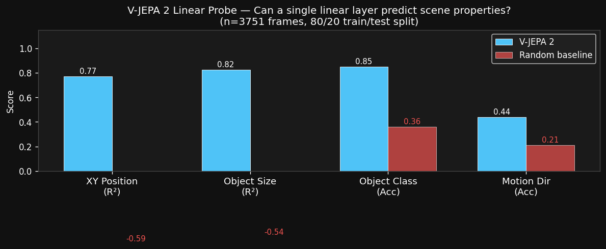
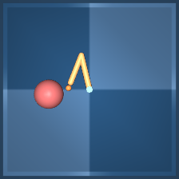
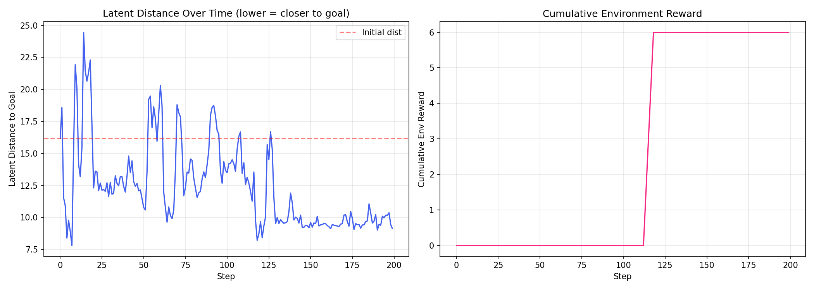
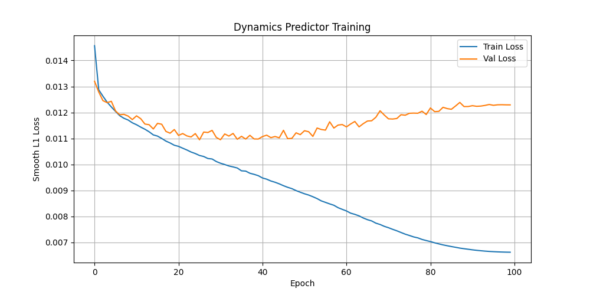

We took Meta's V-JEPA 2 — an AI trained on internet video — and used it as a "brain" for virtual robots. No robot training data needed. Total cost: $30.
We plugged Meta's video AI (V-JEPA 2) into a robot planning system — without any retraining. The robot watches one demonstration, then tries to copy it using model-predictive control. It works on 3 out of 7 tasks, especially when the movements are big and visible. The best result? A walking robot that outperforms its own demonstration. All for under $30 in GPU costs.
Training a robot to see and understand the world is expensive. Most approaches train a vision system from scratch for each robot task, requiring millions of interactions.
But what if we could skip all that training?
Meta's V-JEPA 2 is an AI model that learned to understand video by watching tons of internet content. It learned concepts like "how objects move," "what motion looks like," and "how scenes change over time" — all without any labels or supervision.
Our question: Can we freeze this "internet video brain" and use it to control robots, without ever fine-tuning it on robot data?
The system has four main components, stacked like building blocks:

The complete pipeline: camera frames go through V-JEPA 2 (frozen, never retrained), then lightweight models predict what happens next, and a planner picks the best action.
Every camera frame (224×224 pixels) goes through V-JEPA 2, which compresses it into a 1024-number summary. This captures the "essence" of what's happening — positions, shapes, motion — in a compact form. We never change V-JEPA; it's used exactly as Meta released it.
Five small neural networks learn to predict "if the robot does action X in situation Y, what happens next?" They're trained on random robot exploration — just the robot flailing around — so they learn the physics of each environment. Having 5 models lets us measure uncertainty: if they disagree, the prediction is unreliable.
A policy (even a random one!) performs the task once. Every frame is recorded and encoded through V-JEPA, creating a "goal trajectory" — a sequence of compressed snapshots showing what success looks like.
At each moment, the planner imagines 500 possible action sequences, simulates them using the dynamics models, and picks the one that (a) most closely follows the demonstration, (b) maximizes predicted reward, and (c) avoids actions where the models are uncertain. Then it takes the first action and replans.
Before testing robot control, we checked: what does V-JEPA actually "see"? We trained simple linear probes (basically a single equation) on top of frozen V-JEPA features to predict scene properties.

V-JEPA features encode spatial information (position R²=0.77, size R²=0.82) and object identity (85% accuracy) far above random baselines — without any robot-specific training.
V-JEPA understands where things are (R²=0.77), how big they are (R²=0.82), and what they are (85% accuracy) — all from a model that never saw robot data. The "internet video brain" genuinely captures useful spatial information.
We tested on 7 simulated robot tasks from DeepMind's Control Suite. Here's what happened:
The pattern is clear: the bigger the visual movement, the better the robot performs.

The reacher task: a 2-joint arm (yellow) must reach the red target ball. V-JEPA can see this because the movements are big and colorful.
When we start the walker robot from a different position than the demonstration, it actually scores higher (20.1) than when replaying exactly (13.5).
This proves the robot isn't just memorizing and replaying. It's actually understanding the goal and finding its own strategy. Starting from a different position, it discovers more efficient walking patterns guided by its "imagination" (the dynamics model).
The demonstration for cartpole was from a random policy — it scored 0.0 (complete failure at swinging up the pole). Yet our robot scores 14.4.

Left: During an episode, the robot's "mental distance" to the goal decreases steadily — it's tracking the demonstration. Right: Reward starts accumulating around step 100 when the robot reaches the right region.
The failures reveal an important insight about what the "video brain" actually sees:
| Task | Visual Change | Result |
|---|---|---|
| 🚶 Walker | Big limb swings across the screen | Works |
| 🎡 Cartpole | Pole swings through large angles | Works |
| 🎯 Reacher | Visible arm stretches toward target | Works |
| 🐆 Cheetah | Body deforms moderately | Barely |
| 🦘 Hopper | Subtle leg/body position changes | Fails |
| 🫰 Finger | Tiny object rotation, small on screen | Fails |
| ⚫ Point Mass | Tiny ball on plain blue background | Fails |
V-JEPA learned from internet videos — people walking, objects moving, big visual changes. It's great at spotting large, colorful motion. But it can't distinguish a finger rotated 10° from 15°, or a tiny ball at position (0.3, 0.4) vs (0.35, 0.42). The video brain sees the big picture, not the fine details.
We tested removing each component to see what's actually important:
With 5 dynamics models instead of 1, the reacher improves 4.1× (from 4.4 to 18.0). But on simple cartpole, a single model is actually slightly better. Lesson: match model complexity to task complexity.
Penalizing actions where the 5 models disagree helps on reacher (18.0 vs 10.0) but the improvement is within noise. The idea is sound but needs more data to confirm.
Surprisingly, removing the reward model actually improves shifted-condition performance on reacher (5.4 vs 2.2). The reward signal overfits to familiar states and doesn't transfer to new starting positions.

Dynamics models converge rapidly — reaching near-zero prediction error within 100 training epochs. The "imagination" becomes accurate fast.
This includes everything — data collection, model training, failed experiments, ablation studies, and 7-task evaluation. The breakdown:
Most robot learning papers use thousands of dollars of GPU compute. By freezing the large model and only training tiny modules, we make this research accessible to anyone with $30 and a rented GPU.
Video AI models trained on internet data do capture useful information for robot control — but only for tasks with big, visible movements. The "internet video brain" sees the world like a casual YouTube viewer: it catches the big stuff, misses the subtle details.
Representation quality determines planning quality. When V-JEPA captures the right features, even simple planning works. When it doesn't, no amount of clever planning can compensate. The bottleneck is what the AI "sees," not how it "thinks."
To push this further, the most promising directions are: